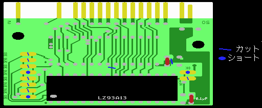

５ パターンカット＆ショート

図２ パターンカット＆ショート
まず、カッターで実体図に青い斜線で示した部分のパターンをカットします。 実際にはもともとカットされているところもありますので、基板が
TAS-1M016SならC2,C5,C6,C7,C8,C9の６ヶ所、
TAS-1M008SならC1,C3,C4,C7,C8の５ヶ所
をカットすることになります。勢い余って隣のパターンを切らないように注意します。
次に、実体図で青丸で描かれた部分を半田を盛ってショートします。回路図では青い線でかかれた配線です。 ここも、もともとショートしている部分がありますので、基板が
TAS-1M016SならJ2とJ3の２ヶ所、
TAS-1M008SならJ1の１ヶ所
をショートするだけです。盛りすぎたら吸い取り器で余分な半田を吸い取ります。ショートは難しくはないでしょう。
ここで、カット及びショートした部分をきちんとチェックしておきましょう。
この部分は分かる人向けの説明です。分からなくても支障はありません。
この作業について説明しますと、C1とC2、C3とJ1、C4とC5、C6とJ2、は２つずつ組みになっていて、 右側が繋がっています。そして、それがＲＯＭのA16、A15、A14、A13に繋がっていました。左側にはメガロムコントローラ からの拡張アドレス信号等が来ています。
ＲＯＭのあった場所にＳＲＡＭを差し込むと、ＲＯＭではA16〜A13だったのがそれぞれ /OE、A14、/WE、A13になります。そこで、当然ながら/OEと/WEにあたる部分は繋がらないようにカットします。 それがC1＆C2とC4＆C5に当たります。
C3＆J1、C6＆J2の部分は、それによってそれぞれＳＲＡＭのA14とA13にメガＲＯＭコントローラ からの拡張アドレス信号が入るようにしています。
次に、C7についてです。これは、ＳＲＡＭの/CSに繋がることになり、ここではLS139を使って作った信号を使うのでカットしておきます。
C8については、キャパシタによる電源供給がＳＲＡＭに対してのみ送られるよう、ＳＲＡＭのＧＮＤを他のＧＮＤ部分と切り離しておくためです。
最後に、J3&C9についてです。ここではメガロムコントローラーを16Kバンクモードで 使うか、8Kバンクモードで使うかによってどちらかを 選択する部分で、似非ＲＡＭディスクでは後者を使うために、J3&C9となっています。
J*の部分は回路図にも書かれていますので、よく見比べてみてください。その部分の配線はこのショート作業によって終わりました。 TAS-1M016SとTAS-1M008Sではこのカット及びショートする部分が多少異なるだけで、これ以降の作業は全く同じです。 これからの配線もそうですが、配線等の終わった部分については回路図や実体図に印をつけておくとよいでしょう。